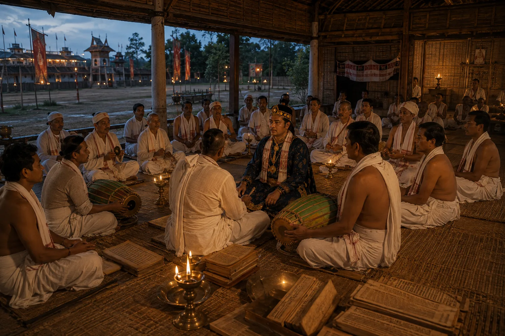

Royal Naam-Prasanga and Satra Endowments
c. 1660 · Against the Mughal Empire

The king participates in choral chanting (Naam-Prasanga) and donates extensive rent-free lands and paiks to the satras of Majuli.
Sources have not yet been catalogued for this record.
People: Jayadhwaj Singha (Sutamla)